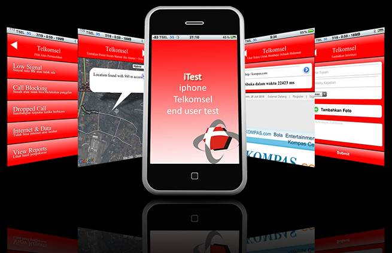
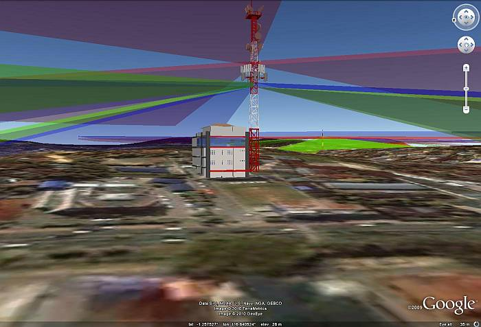

Tronic H Siregar
SmartMobile

Smart Mobile is a mobile application to access performance statistics and parameters of cellular network such as traffic, blocking, CSSR, TCH available, etc. With this application, the performance of cellular networks can be accessed anywhere and anytime. This application can be run on mobile devices with Windows Mobile operating system.
iTest
iTest stands for iPhone Telkomsel Enduser Test is a project to measure end user experience level in data using iPhone by using available applications in AppStore. This project was presented in RAPIM 2010.
Sysinfo3D
Sites database visualization in 3D developed by me using popular mapping platform: Google Earth. Using this popular platform sites database could be accessed easily and interactive by non technical departments